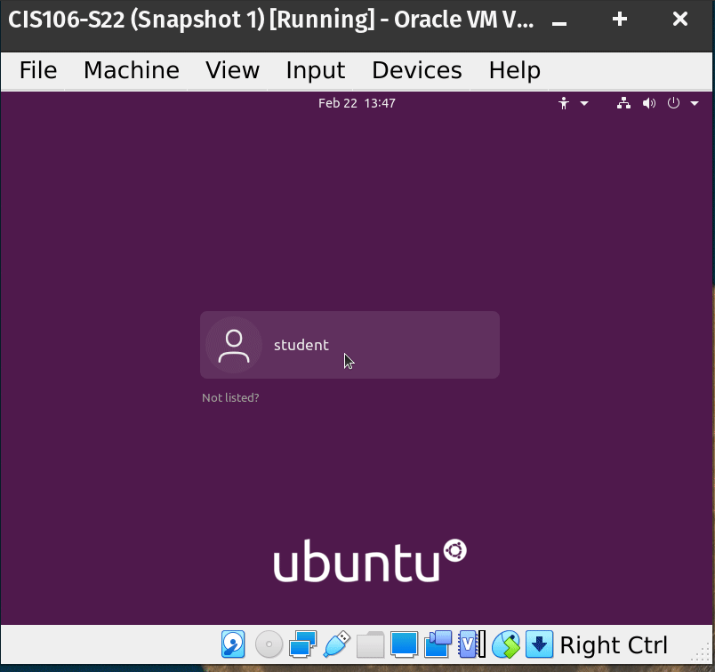

VOLVER AL INICIO
MATERIAL
Para esta práctica se ha utilizado:
Ordenador aportado por el centro educativo.
Disco duro propio con capacidad de 2TB
Programa: Oracle VM VirtualBox.
Imagen: lubuntu-20.04.5-desktop-amd64
